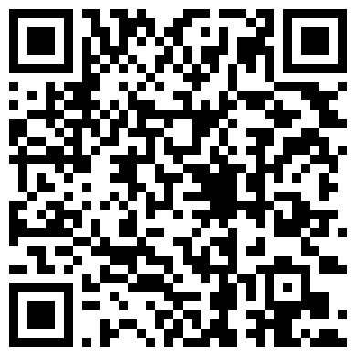

Astronomia (AST0001) · Curso de Física · UDESC
O céu como laboratório físico
Aula 1 · Fundamentos observacionais e escalas de medida
Prof. Dr. Rafael Camargo Rodrigues de Lima · 2026/2
O que esta aula responde
Esta aula cobre o Capítulo 1 da apostila, inteiro: como se mede uma direção, com que precisão, e em que sistema; de onde saem a altura, o nascer e o poente; por que existem estações; por que o dia solar e o sideral diferem de 3 min 56 s; como sair de uma data de calendário e chegar à altura de uma estrela; e por que todo catálogo declara uma época.
Ela responde a uma pergunta só — onde. As outras duas, a que distância e como se move, são dos Capítulos 2 e 3.
Ao final, o roteiro do laboratório da abóbada celeste, que é o laboratório deste capítulo.
A limitação que virou método
Quase tudo que sabemos do universo vem de observação à distância.
- Não se coloca uma estrela em uma bancada
- Não se repete a formação de uma galáxia
- Não se acelera a história cósmica
O que chega até nós: luz, posição, tempo, movimento — e, em casos especiais, partículas e ondas gravitacionais.
Tudo isto chegou como luz
O primeiro campo profundo do James Webb. Os arcos alaranjados são galáxias distantes, cuja luz o aglomerado à frente entorta. Nada aqui foi visitado nem repetido em bancada: tudo chegou como luz. — NASA, ESA, CSA e STScI, domínio público
A cadeia que atravessa o curso inteiro
observável → calibração → modelo → grandeza física
- Fluxo, posição e tempo de chegada são o que se mede
- Massa, distância, temperatura e idade são o que se infere
- Toda inferência carrega hipóteses — e elas precisam ser ditas
Capítulo 1 · Ângulos, coordenadas e sistemas de referência
Toda medida de posição no céu é a medida de um ângulo.
- Ângulos, ângulo sólido e resolução
- Os quatro sistemas de coordenadas, e a convenção do azimute
- Trigonometria esférica e a equação da altura
- Da data civil ao tempo sideral e à altura no céu
- Eclíptica, estações, equação do tempo
- Precessão, época e a cadeia de reduções
Responde a pergunta onde.
Medir uma direção é medir um ângulo
- A esfera celeste tem duas dimensões: só direção, nunca distância
- Unidade prática: o segundo de arco
1° = 60′ = 3600″
Aplicação: a maior paralaxe do céu
Proxima Centauri desloca-se 0,77″ ao longo do ano. Em radianos:
É o maior efeito de paralaxe que existe — e são milionésimos de radiano. Toda a astrometria vive nessa escala, e é por isso que a unidade de trabalho é o segundo de arco, não o radiano.
A constante mais usada da astronomia prática
Converter radianos em segundos de arco:
Não é constante física: é só 180 × 3600 / π.
Aplicação: o tamanho angular do Sol
O diâmetro solar sobre a distância, convertido por 206265:
Meio grau — e a Lua subtende quase o mesmo. É essa coincidência que torna possíveis os eclipses totais.
O disco que subtende meio grau
O Sol pelo SDO em ultravioleta extremo (17,1 nm), não em luz visível. A borda nítida é o limbo — o disco que subtende os 32′ da conta anterior. O brilho que passa dela é a coroa. — NASA/GSFC/SDO, domínio público
Aproximação de pequenos ângulos
Um objeto de tamanho ℓ a distância d subtende:
Erro menor que 1% para θ < 10°. Em segundos de arco, é exata para qualquer propósito.
Aplicação: o diâmetro de Júpiter
Na oposição o disco mede 47″, e o planeta está a 4,2 UA:
Valor tabelado: 142 984 km — três algarismos batem, e a conta foi uma multiplicação. A mesma relação ao contrário: uma moeda de 1 real subtende 1″ a 5,6 km.
O disco de 47 segundos de arco
Júpiter em disco cheio, pelo Hubble, em 21 de abril de 2014. A olho nu ele é um ponto; é este disco de 47″ que sustenta a conta anterior. A oval alaranjada é a Grande Mancha Vermelha. — NASA, ESA e A. Simon (GSFC), domínio público
Calibrando a intuição
Do olho nu ao VLBI vão seis ordens e meia de grandeza: 60″ / 20 μas = 3 × 10⁶.
Ângulo sólido
Direções ocupam área na esfera; um cone de meia-abertura α subtende:
Para α pequeno, é a área do disco de raio angular α — e é essa integral que reaparece no Capítulo 3, ao converter intensidade em fluxo.
O céu em graus quadrados
Guarde esse número: ele converte a área de um levantamento em fração do céu, e portanto contagens em densidade.
A esfera celeste
- Não é uma casca real: é uma construção geométrica
- Duas estrelas próximas no céu podem estar a kiloparsecs uma da outra
- Coordenadas celestes fixam direção, não posição
O Cruzeiro do Sul, em profundidade
Seis graus no céu, 112 parsecs no espaço. A cruz é perspectiva, não estrutura: Ginan, que aparece dentro dela, está 69 pc à frente de Imai. — Paralaxes Hipparcos e Gaia EDR3, via SIMBAD
Órion, como se vê da Terra
A alaranjada é Betelgeuse; a azul, Rigel; no meio, o cinturão que aqui se chama Três Marias. É a figura que praticamente toda cultura desenhou no céu. — NASA / STScI, visualização de Frank Summers
A mesma Órion, de outro ponto de vista
As mesmas estrelas, com as mesmas ligações, vistas de um ponto deslocado da Terra: a figura se desfaz. Ela nunca foi um objeto — era o ângulo de onde olhávamos. — NASA / STScI, visualização de Frank Summers
Sistema horizontal
- Plano fundamental: o horizonte do observador
- Coordenadas: azimute Az e altura h
- Responde à pergunta operacional: dá para observar agora?
- Problema: muda a cada minuto, e depende do lugar
Sistema horizontal, na figura
Zênite, horizonte local, nadir; a altura h sobe do horizonte e o azimute Az corre ao longo dele. Tudo aqui depende de onde você está e de que horas são. — Francisco Javier Blanco González, CC BY 2.5, via Wikimedia Commons
Sistema equatorial
- Plano fundamental: o equador celeste
- Coordenadas: ascensão reta α e declinação δ
- É o sistema de catálogo — acompanha a rotação do céu
- Depende da época, por causa da precessão
Sistema equatorial, na figura
Ascensão reta contada a partir do equinócio vernal, declinação medida a partir do equador celeste. A eclíptica aparece inclinada de 23°26′ — e é o cruzamento dela com o equador que define a origem. — Tfr000, CC BY-SA 3.0, via Wikimedia Commons
Eclíptico e galáctico
- Eclíptico: plano da órbita da Terra — natural para o Sistema Solar
- Galáctico: plano da Via Láctea — separa disco de halo imediatamente
- A escolha do sistema é operacional, não estética
O céu inteiro, em coordenadas galácticas
Densidade de estrelas medida pelo Gaia, em coordenadas galácticas: o plano da Via Láctea, que no equatorial é uma senoide, aqui vira uma reta. As duas manchas abaixo à direita são as Nuvens de Magalhães. — ESA/Gaia/DPAC, CC BY-SA 3.0 IGO
Os quatro sistemas
| Sistema | Plano | Coordenadas | Depende de |
|---|
| Horizontal | horizonte | Az, h | local e instante |
| Equatorial | equador celeste | α, δ | época |
| Eclíptico | eclíptica | λ, β | época |
| Galáctico | plano da Galáxia | ℓ, b | nada |
A convenção do azimute
- Neste curso, o azimute é contado a partir do Norte, no sentido N → L → S → O, de 0° a 360°
- A altura é medida sobre o círculo vertical do astro, positiva acima do horizonte
- É a convenção do IAU SOFA, do Stellarium e do astropy
Textos clássicos de astronomia de posição contam o azimute a partir do Sul. Trocar de convenção sem perceber inverte o sinal do azimute calculado — e é um erro que não deixa sintoma.
Por que ascensão reta em horas
- A Terra gira 360° em 24 horas siderais
- 1h de ascensão reta = 15°
- A diferença de α entre dois objetos é o intervalo entre suas culminações
A unidade codifica um relógio.
Trigonometria esférica
Todo problema de posição vira um triângulo sobre a esfera.
Dedução: lei dos cossenos esférica
Vetores unitários do centro a cada vértice, com A na origem:
O produto escalar û_B · û_C dá o resultado direto.
Lei dos cossenos esférica
Para triângulos pequenos, cos x ≈ 1 − x²/2 e sen x ≈ x: recupera-se a lei plana.
Lei dos senos esférica
Sai do produto vetorial, calculando a mesma área de dois modos.
O triângulo polo–zênite–objeto
Os três lados do triângulo PZX:
O ângulo no polo é o ângulo horário H = Θ − α, com Θ o tempo sideral local.
A equação da altura
Aplicando a lei dos cossenos ao lado ZX — e a dos senos, para o azimute:
A primeira responde a quase toda pergunta prática de observação. A segunda deixa ambiguidade de quadrante — adiante, a forma com atan2 resolve isso.
Consequência 1: culminação
Em H = 0 o objeto cruza o meridiano:
Em Joinville (φ ≈ −26°), objetos com δ = −26° passam pelo zênite.
Consequência 2: nascer e poente
Daí sai a duração do arco diurno: 2H₀, convertido para horas.
Consequência 3: circumpolaridade
- Se |tan φ tan δ| > 1, não há solução
- O objeto nunca se põe, ou nunca nasce
- Em Joinville: δ < −64° é circumpolar
Circumpolaridade, fotografada
Longa exposição no observatório Gemini Norte: as estrelas descrevem círculos em torno do polo celeste. As de raio pequeno nunca se põem — são as circumpolares. — International Gemini Observatory/NOIRLab/NSF/AURA, CC BY 4.0
A eclíptica e a obliquidade
- O Sol descreve um grande círculo ao longo do ano: a eclíptica
- Inclinação em relação ao equador: ε = 23°26′
- Essa é a inclinação do eixo de rotação da Terra
Onde a eclíptica passa, fotografado
A luz zodiacal, fotografada no La Silla olhando para oeste depois do pôr do sol: luz solar espalhada pela poeira interplanetária, que se concentra no plano do Sistema Solar. O brilho difuso sobe do horizonte ao longo desse plano — o mesmo em que o Sol se move durante o ano. Não é a eclíptica desenhada no céu: é a poeira que mostra onde ela passa. — ESO/Y. Beletsky, CC BY 4.0
Por que existem estações
O fluxo por unidade de área horizontal:
No verão local, δ tem o mesmo sinal de φ, o Sol sobe mais e sen h é maior.
Os dois efeitos somam
Mais fluxo por unidade de área e mais horas de insolação — os dois na mesma direção.
A geometria das estações
A inclinação do eixo se mantém fixa no espaço enquanto a Terra orbita: em cada solstício um hemisfério recebe luz mais direta e por mais tempo. — NOAA Office of Education, domínio público
A excentricidade não explica
Variação de fluxo ao longo da órbita:
7%, e o periélio é em janeiro — verão do hemisfério sul. O efeito existe, é secundário, e tem sinal oposto entre hemisférios.
A equação do tempo
- O Sol verdadeiro não é bom relógio: adianta e atrasa
- A diferença em relação a um Sol médio tem duas causas independentes
Componente da excentricidade
Segunda lei de Kepler: a Terra corre mais no periélio.
Período de um ano.
Componente da obliquidade
A projeção da eclíptica sobre o equador não é uniforme:
Período de meio ano, porque depende de sen 2λ.
A curva resultante
Duas propriedades geométricas independentes deixam assinatura em um único gráfico observável.
O analema
Posição do Sol no céu sempre no mesmo horário do relógio, ao longo de um ano: o oito deitado é a equação do tempo desenhada no céu. À esquerda às 8h, à direita às 16h. — Daniel Rüdisser, CC BY 4.0, via Wikimedia Commons
Tempo sideral e tempo solar
Dedução dos 3 min 56 s
Em um dia a Terra avança na órbita:
O dia sideral vale 23ʰ56ᵐ04ˢ. Em seis meses a defasagem chega a 12 h — e o céu da meia-noite é o oposto.
Da data civil à altura no céu
A equação da altura só se torna útil quando se sabe obter Θ, o tempo sideral local, a partir de uma data e de uma hora de relógio.
data e hora → JD → GMST → Θ → H → h, Az
- A data vira um contador contínuo de dias
- O contador vira o ângulo de rotação da Terra
- Longitude e ascensão reta dão o ângulo horário
- O triângulo PZX devolve altura e azimute
Quatro elos — e vale percorrê-los uma vez inteira com números.
Elo 1: a data juliana
A JD conta dias corridos desde −4712, e existe para eliminar meses desiguais e anos bissextos das contas:
Data do calendário gregoriano, UT em horas. Se M ≤ 2, faça antes Y → Y − 1 e M → M + 12.
Elo 2: tempo sideral de Greenwich
O tempo sideral médio em Greenwich cresce linearmente com a data juliana:
O primeiro número é o GMST em J2000,0. O segundo excede 360° porque é o ângulo que a Terra gira em um dia solar — é a diferença de 3ᵐ56ˢ deduzida acima, escrita como taxa.
Elos 3 e 4: tempo sideral local
Soma-se a longitude do observador (positiva a leste) e subtrai-se a ascensão reta:
O elo 4 são as duas expressões já deduzidas: a equação da altura e a do azimute.
Exemplo: Antares vista de Joinville
20 de agosto de 2026, 21h00 do horário local (UTC−3). A que altura e em que direção?
| Antares (J2000) | Joinville |
|---|
| α = 16ʰ29ᵐ24,5ˢ = 247,352° | φ = −26,30° |
| δ = −26°25′55″ = −26,432° | λ = −48,85° |
21h00 local são 00h00 UT do dia 21 — a data que entra na conta é a seguinte.
Passos 1 e 2: JD e GMST
Com Y = 2026, M = 8, D = 21 e UT = 0, vem A = 20 e B = −13:
Passos 3 e 4: do ângulo horário à altura
O sinal positivo de H diz que Antares já passou pelo meridiano há pouco mais de duas horas: está a oeste. A altura sai da equação já deduzida, com φ = −26,30° e δ = −26,432°.
O azimute, sem ambiguidade
A lei dos senos deixa dois quadrantes possíveis. Use o arco-tangente de dois argumentos:
Resposta: Antares está a 60° de altura, a oeste-sudoeste.
Duas verificações que não custam nada
Como δ ≈ φ, Antares passa praticamente pelo zênite daqui — o que explica os 60° mesmo duas horas depois da culminação. Se um desses números destoasse do resultado, o erro estaria na cadeia, não no céu.
Precessão dos equinócios
- A Terra é achatada: tem bojo equatorial
- Sol e Lua exercem torque sobre esse bojo
- Um giroscópio não se alinha — ele precessa
A taxa e o período
Sol contribui ~16″/ano, Lua ~34″/ano — a Lua domina, porque o torque escala com M/r³. Sobreposta, a nutação oscila com período de 18,6 anos e amplitude de 9,2″ em obliquidade.
O cone de precessão
O eixo da Terra descreve um cone em 25 800 anos, mantendo a obliquidade de 23,4°. A estrela polar de hoje não é a de daqui a mil anos. — NASA / Mysid, domínio público
Época, equinócio e o ICRS
- Época: instante a que se referem posição e movimento próprio (J2000,0)
- Equinócio: instante que define a orientação dos eixos
- ICRS: adotado em 1998, ancorado em quasares — eixos fixos em 0,03 mas, sem correção de precessão
- Gaia-CRF: a realização óptica, base de toda a astrometria moderna
Sem indicação de época, um catálogo é inutilizável: 50,3″ por ano já são quase um minuto de arco em um único ano — e 2515″, ou 42′, em cinquenta.
Da posição de catálogo ao telescópio
- movimento próprio
- paralaxe anual
- aberração (20,5″)
- deflexão gravitacional pelo Sol (1,75″ no limbo, 4 mas a 90°)
- precessão e nutação
- orientação instantânea da Terra
- refração atmosférica
A soma pode passar de um minuto de arco. Nenhuma etapa é opcional em trabalho de precisão.
O laboratório do Capítulo 1: o que ele mede
Dois números por objeto — azimute e altura. O resto é consequência:
| o que você mede | o que sai disso | referência |
|---|
| a faixa da Via Láctea | a inclinação do plano galáctico, e o polo | 62,87° |
| o Sol em 12 datas | a obliquidade da eclíptica ε | 23,44° |
| os cinco planetas | a latitude eclíptica β: o Sistema Solar é plano? | β ≈ 0 |
| uma estrela, 3 horários | A e h mudam; α e δ não | — |
Você nunca digita α e δ. Eles saem de A, h, da latitude do sítio e do relógio sideral — e é essa conta que o artigo tem de mostrar.
Onde fica

rafaelcrdelima.github.io/Astronomia/
laboratorio-capitulo-1a/
O céu de Joinvilleroda no navegadornada para instalarcatálogo sorteado a cada acesso
O catálogo muda a cada vez que você abre a página: as suas medidas são suas. Duas pessoas não entregam a mesma tabela, e os resultados finais têm de bater assim mesmo.
A abóbada: o que você está vendo
Você está no centroolhando para cima; a borda do círculo é o horizonte, e o meio é o zênite
Norte em cima, Leste à esquerdaé a convenção de quem olha para o alto, não para um mapa de papel
Os anéismarcam altura de 30° e 60°; um objeto no centro exato está a h = 90°
Só o que está no céuo que está abaixo do horizonte não aparece — os objetos nascem e se põem
Em ciano, a faixa da Via Láctea. Em cinza, estrelas de fundo. Coloridos e com nome, os cinco planetas visíveis a olho nu. E o Sol, com halo dourado.
Os controles, e o relógio que importa
Dia do ano1 a 365. Move o Sol pela eclíptica e troca o céu que você vê à noite
Hora local0 a 24 h, em UTC−3. Gira o céu: é o que faz A e h mudarem
Precisão de leitura0,05° a 1,5°. É o erro do seu instrumento, e ele entra em toda medida
Tempo sideral Θnão é controle: o laboratório calcula de dia e hora, e mostra no painel
Θ é o relógio que o céu usa. Ele diz qual ascensão reta está passando pelo meridiano agora — sem ele, A e h não viram α e δ. Sítio fixo: Joinville, φ = −26,30°, λ = −48,85°.
Medir: do clique ao registro
- Clique perto de um objeto: ele fica circulado em dourado
- O painel mostra A, h, a população a que ele pertence e o Θ do instante
- A faixa acima da abóbada mostra também o α e o δ já convertidos
- Clique em Registrar medida — a linha entra na tabela e passa a contar
Cada leitura já vem com o erro do instrumento aplicado: medir o mesmo objeto duas vezes não dá o mesmo número, como em qualquer bancada. Dois botões medem em lote: o Sol ao meio-dia em 12 datas e a selecionada em 3 horários.
A conversão que você vai refazer na mão
O CSV traz A, h e Θ. As coordenadas de catálogo saem daí, com a latitude do sítio:
Repare no que entra: φ diz onde você está, Θ diz quando. Um sistema que precisa dos dois é local e instantâneo; o que sai não precisa de nenhum. Refaça a conta em pelo menos três linhas — é ela que prova que você entendeu a diferença.
Experimento 1 · o mesmo objeto, três horários
Uma estrela em δ ≈ −45°, medida às 21 h, 22 h e 23 h do mesmo dia:
| hora | A | h | α | δ |
|---|
| 21 h | 146,93° | 66,22° | 247,39° | −45,10° |
| 22 h | 173,13° | 71,28° | 247,37° | −44,86° |
| 23 h | 204,19° | 69,08° | 247,39° | −44,90° |
| variação | 57,3° | 5,1° | 0,02° | 0,24° |
Em duas horas o azimute andou 57 graus. A ascensão reta não saiu do erro de leitura (0,15°). Mesma estrela, mesmo céu: o que mudou foi o sistema de coordenadas. Este é o argumento central do artigo, e ele cabe numa tabela de quatro linhas.
A ideia geométrica que sustenta o resto
Um círculo máximo inclinado de i em relação ao equador celeste desenha, em α e δ, uma senoide:
E o polo desse círculo sai dos dois mesmos parâmetros:
Daí vem tudo. Medir a inclinação é medir a amplitude da senoide. A faixa da Via Láctea e a eclíptica são círculos máximos diferentes — a mesma conta serve para os dois, mudando só quais pontos entram.
Experimento 2 · a faixa da Via Láctea
Registre 15 objetos da faixaos pontos em ciano, aqueles que formam a banda contínua no céu
Em datas e horários diferenteseste é o ponto delicado — veja a nota abaixo
Sai a inclinação icom incerteza, contra a referência de 62,87°
E sai o polo galácticoαp = 192,86°, δp = +27,13° — um lugar no céu que você localizou medindo outro
Se você medir tudo na mesma noite, os pontos se concentram numa faixa estreita de α e você estará ajustando uma senoide a um pedaço curto dela: a amplitude fica mal determinada e a incerteza explode. Espalhe as datas.
A faixa que você vai medir
Panorama de 360° do céu inteiro — GigaGalaxy Zoom do ESO, de La Silla e do Paranal. É esta banda que os pontos em ciano do laboratório reproduzem, e cuja inclinação em relação ao equador celeste você vai ajustar. — ESO/S. Brunier, CC BY 4.0
Experimento 3 · o Sol e a obliquidade
Use o botão de loteMedir o Sol ao meio-dia, em 12 datas — uma por mês, ao longo do ano
Por que o Solele está exatamente sobre a eclíptica, por definição: é o traçador ideal
Sai εa amplitude da senoide do Sol é a obliquidade; referência 23,44°
Guarde esse εé ele, o seu, que o próximo experimento vai usar
A declinação do Sol ao longo do ano é a curva que produz as estações. O que você mede aqui em cinco minutos é a mesma constante que define os trópicos — e a inclinação do eixo da Terra.
Experimento 4 · os planetas estão na eclíptica?
Meça os cinco planetas e converta cada um com o ε que você mediu:
- A longitude λ se espalha por todo o círculo — eles estão em pontos quaisquer da órbita
- A latitude β fica presa a poucos graus de zero, para todos
Se o Sistema Solar não fosse plano, β se espalharia por ±90° como λ. É essa a razão de existir um sistema de coordenadas eclípticas — e você acabou de medi-la, sem sair da abóbada.
Ajuste contra máximo: por que o ajuste ganha
A tabela de resultados traz duas colunas. O método do máximo toma a maior declinação medida; o ajuste usa todos os pontos. O máximo erra dos dois lados:
Superestima na faixa galácticaa banda tem espessura própria, e ruído e espessura só empurram o maior valor para cima — nunca para baixo
Subestima no Sol12 datas dificilmente caem no solstício; o máximo amostrado fica aquém do máximo verdadeiro
Um estimador que usa um ponto só herda todo o erro desse ponto. Comparar as duas colunas e explicar o sinal de cada viés vale um parágrafo inteiro da discussão do artigo — e é o tipo de coisa que distingue um relatório de um artigo.
Exportar o artigo com as suas tabelas
Na aba Template de Relatório, escreva os nomes do grupo (até três) e clique em Gerar template:
main.texno modelo da disciplina, com o seu nome e o seu resultado já no resumo
tabelas/as suas medidas, os planetas, a invariância e os resultados — em LaTeX
figuras/a abóbada e os dois ajustes, como você os deixou na tela
dados/os CSVs das medidas e do catálogo
Envie tudo ao Overleaf e compile duas vezes. As tabelas e figuras já estão citadas no texto: o que falta é escrever. O botão Exportar CSV baixa só as medidas, se você quiser trabalhar antes na planilha.
Na próxima aula
Encerramos o Capítulo 1: ângulos, sistemas de referência e a conversão entre eles. Você já sabe dizer onde um objeto está.
- O Capítulo 2 responde a outra pergunta: a que distância, e quão luminoso
- Paralaxe, parsec e a régua que se mede em vez de inferir
- Fluxo, magnitudes e a escala de Pogson
- Extinção e cor — por que ignorar poeira anula o resultado
Uma direção não distingue uma anã fraca e próxima de uma supergigante distante. É o Capítulo 2 que fecha essa lacuna — e é ela que o artigo do Capítulo 2 cobra.